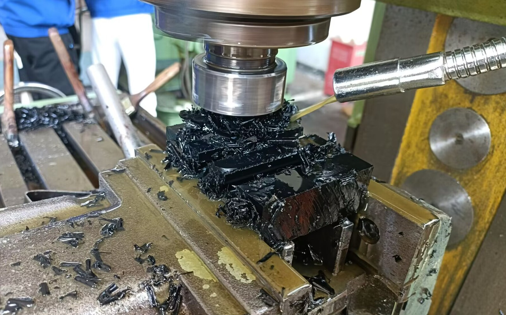
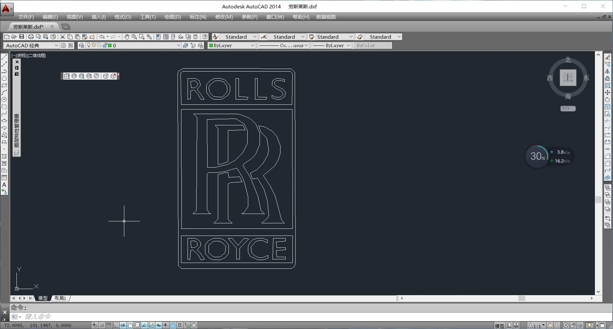
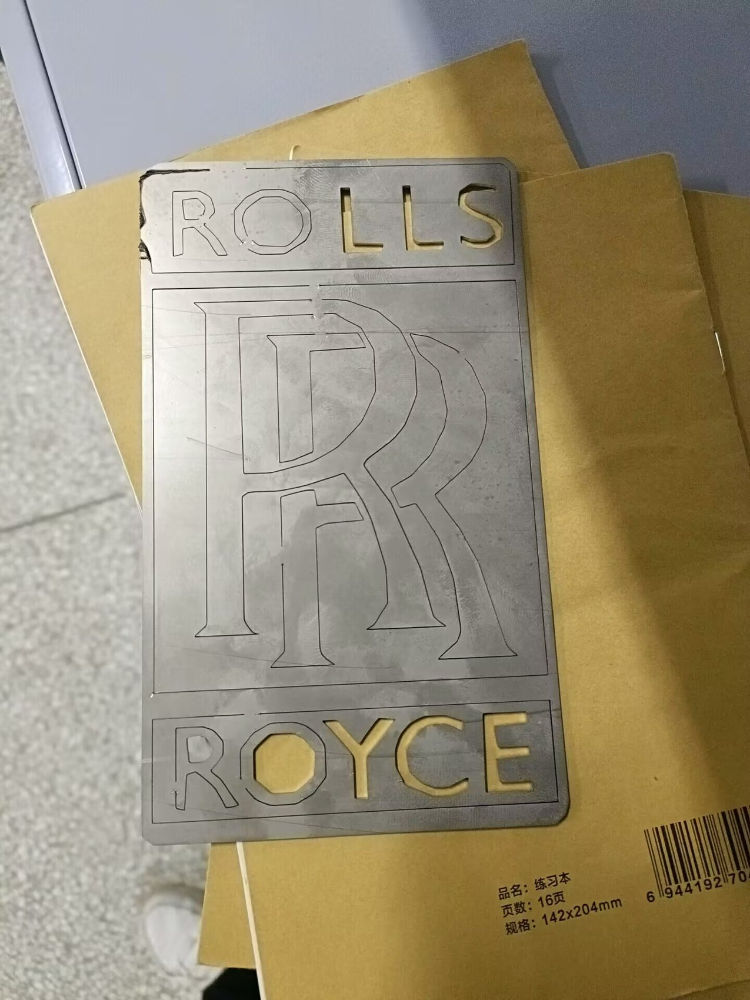
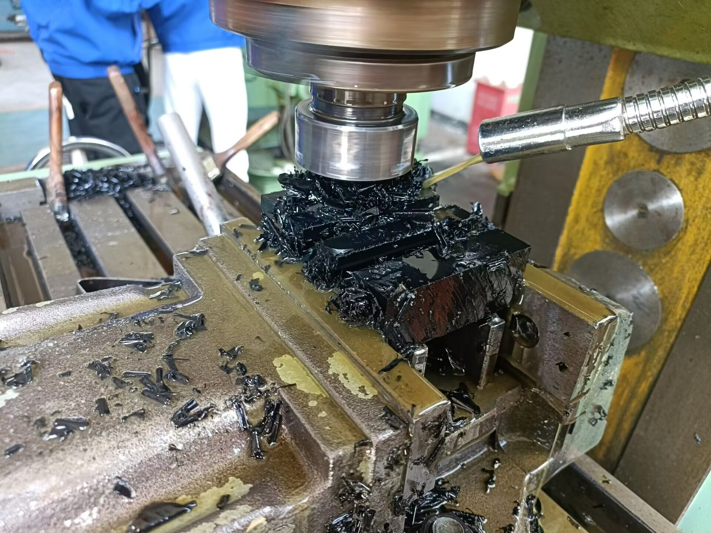
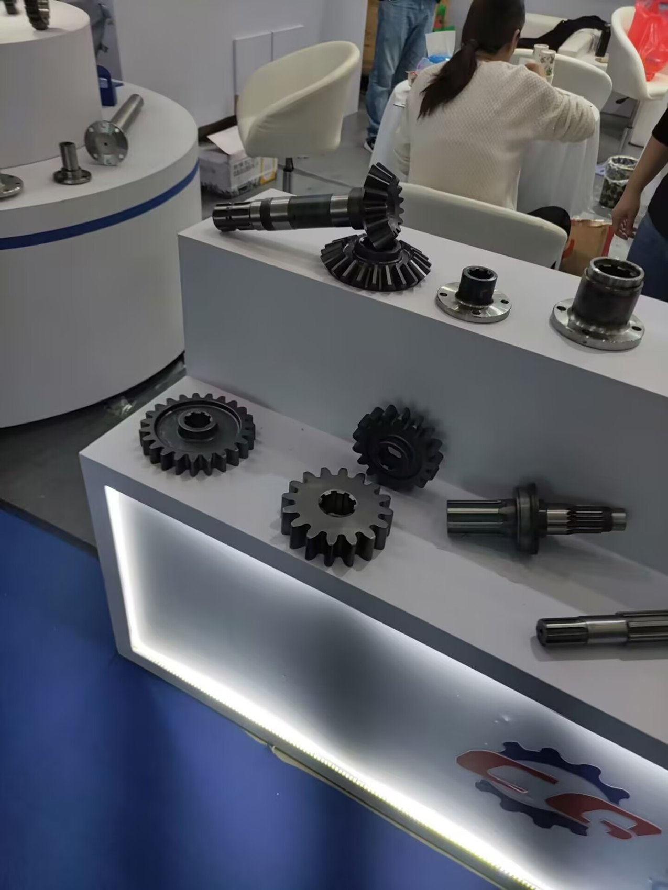
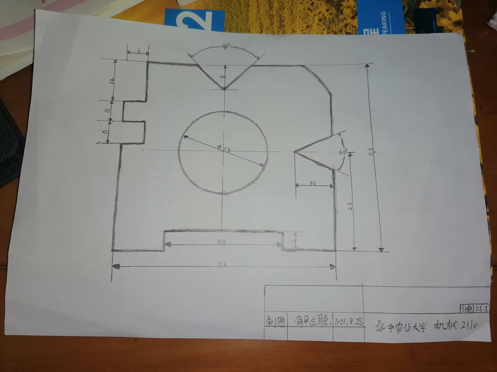
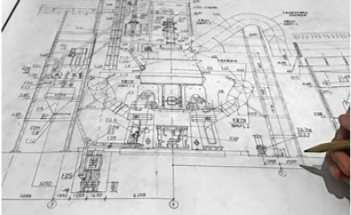

Hands-on manufacturing training
Manufacturing Workshop Internship / Training
Earlier hands-on manufacturing training covering laser cutting, 3D printing and CNC machining. I use this page to show practical manufacturing exposure beside my CAD, simulation and systems-engineering projects: DXF preparation, physical cutting results, machining-process observation and awareness of workholding, tool motion, material removal and process limits.
Engineering Snapshot
Prepared DXF geometry, observed/practised machining workflow and documented physical process evidence.
AutoCAD screenshot, laser-cut plate, CNC process photo and machined gear/shaft examples.
Also includes 3D printing workflow exposure and design-for-manufacture awareness.
Awareness of tolerances, edge quality, workholding, tool access, chips and process safety.
Not presented as production ownership; strongest evidence is laser cutting and CNC process exposure.
Useful for roles needing practical judgement and comfort around workshop constraints.

What I Practiced
- Prepared 2D vector geometry in AutoCAD/DXF format for laser cutting and engraving.
- Linked digital drawing intent to a physical laser-cut practice part, including contour quality and part cleanup.
- Practiced or observed CNC machining workflow: workholding, spindle/tool motion, cutting fluid, chips and process safety.
- Reviewed machined gear and shaft components to understand how CAD geometry becomes real manufacturing features.
- Worked through basic 3D printing workflow during the school internship/training period, linking digital geometry to build orientation and post-processing decisions.
Visual Evidence
The images below are used as evidence of process exposure and training activity. The decorative practice plate is not presented as customer, employer or brand-affiliated work.






Capability Added to My Portfolio
Manufacturing Thinking
- Understanding that design geometry must survive real machine constraints, material behaviour and setup limits.
- Better judgement around sharp corners, clearances, part orientation, tool access and post-processing.
- More grounded DFM discussion when building SolidWorks models, fixtures, enclosures and validation hardware.
Honest Boundary
- This is training exposure rather than production ownership.
- The page is strongest as process-awareness evidence, not CNC-programming ownership.
- The 3D printing part of the experience is included as process exposure, while the strongest visual evidence on this page is laser cutting and CNC machining.
How It Connects to Current Projects
The workshop experience supports my newer portfolio work: the ruggedized IoT module needs enclosure DFM, gasket and screw-boss judgement; the ventilation validation kit needs practical fabrication planning; and the front-wing / CFD / FEA work benefits from a clearer sense of how digital designs become physical parts.